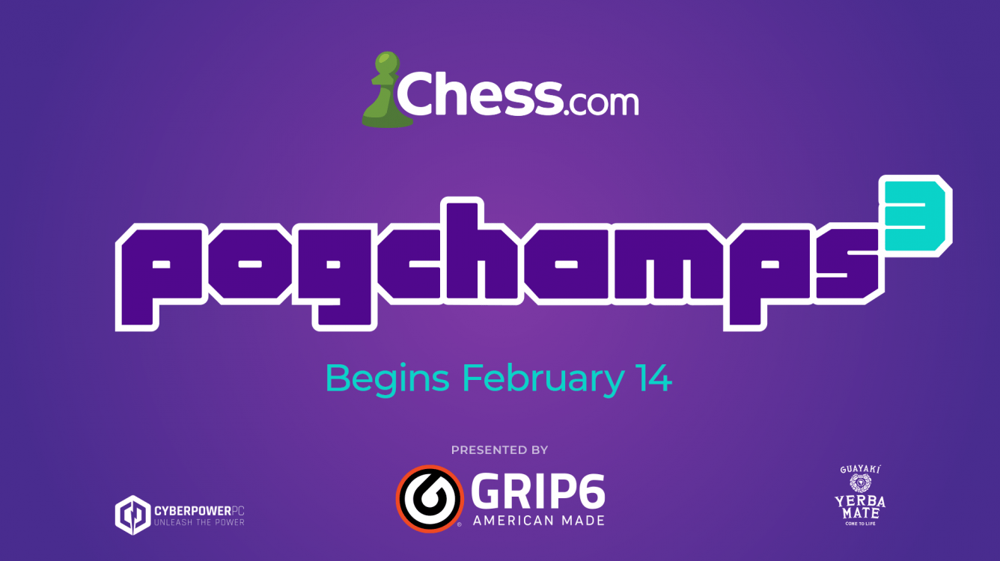

Hogyan lett a Sakk újra népszerű?

Hikaru volt az az ember aki életet lehelt ebbe a játékba,sikerült neki ezt a játékot a nagy közönség előtt új szinben feltünktetnie. Ez főként a személyiségével és a hozzáállásával sikerült megszerettetni a játékot az emberek nagyrészével. Ezután közösen összeálltak XQC-vel és ez által nagyon felkapott lett a sakk. Ennek hatására született meg a PogChamps event.Ez egy ojan sakkverseny,ahol sok híres streamer egymás ellen megmérettetik tudásaikat, miközben a már eddig is híres sakkmesterek kommentáják a játékukat, és esetenként fel is készítik a streamereket a versenyre.

Érdekességek
A legtöbb sakkmester előre le tud jásztani a fejében több mit 20 lépést egymás után.
Egész sakkjácmákat újra tudják játszani az emlékezetükből.